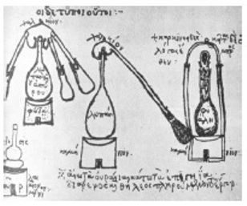

ŞEKİL 69. Bir Yunan simya elyazmasında, İS 300’lerin basit ve geri akışlı damıtma aletleri
(14. yüzyıl Bizans kopyası; Bibliothèque Nationale de France, Paris).3
Damıtma başlığı (Ar. “al-imbik” → Lat. “ambix” → İng. “alembic”) yardımıyla sürekli damıtma işlemi, şekil olarak benzediğinden “pelikan” adı verilen bir düzenekle gerçekleştiriliyordu. Damıtma düzeneğindeki su soğutmalı sarımlara ise “serpent” (yılan) adı veriliyordu.
“Alkol” adı ilk kez 16. yüzyılda Paracelsus tarafından şarabın damıtma ürünü için kullanılmıştır. Paracelsus’un çok alkol içen ayyaş biri olduğu da bilinmektedir. İlk reçetelerde, damıtılacak şaraba yemek tuzu ve bitki külü (potas) eklenmesi öneriliyordu. Bu tuz katkıları, sonuçta kimyasal tuz etkisi yoluyla alkol çıkışını kolaylaştırmaktaydı.
15. ve 16. yüzyıldaki iki gelişim, damıtma tekniğindeki ilerlemeyi etkiledi. Biri, kitap basım tekniğinin geliştirilmesi olup damıtma tekniği konusunda çok sayıda zengin resimli kitapların basılmasına ve böylece bilgilerin yayılmasına yol açmıştır. Ötekisi ise Paracelsus tarafından ortaya konan “simya sanatı yoluyla ilaç hazırlanması” (iyatrokimya) olup bitkisel, hayvansal ve mineral maddelerden ilaçların hazırlanmasında özel olarak damıtmanın uygulanmasıdır.
Albertus Magnus (1193-1280), damıtmayı simyanın temel bir işlemi olarak betimlemiştir. Hieronymus Brunschwig, 1512’de Strasbourg’da Liber de arte distillandi de compositis (Almanca nüshasının başlığı: Destillierbuch über die zusammen gethane Ding) (Damıtma Sanatı Kitabı) adlı kitabını yayınlamıştır. 16. yüzyılda damıtma uygulamaları tıbbî preparatlar, iksirler, parfümler ve içkilere yönelikti.50
Geç-Ortaçağ ve Rönesans (1400-1600) dönemindeki ilerlemeler küçük adımlar halinde oldu ve geniş yankı uyandıran bir gelişme olmadı. Sıcaklıklar hâlâ ölçülemiyordu. Farklı sıcaklık düzeylerine erişmek için daha farklı ısıtma türleri yürürlüğe girdi. 40°C’a kadar olan birinci ısıtma derecesi, yaklaşık olarak el sıcaklığına karşılık geliyor ve damıtma balonunu bir su banyosu ya da mumla ısıtarak elde ediliyordu. Bu arada su banyosu kullanılarak çok sayıda damıtma balonunu bir arada ısıtabilecek türde damıtma düzenekleri de geliştirildi. Ayrıca orta derecede sıcaklıkları elde etmek için ise mercek ya da büyüteçle odaklanarak güçlendirilmiş güneş ışınları kullanılıyordu. 60°C’a kadar olan sıcaklıklar için biyokimyasal parçalanma tepkimeleri ya da mayalanma süreçleri (bekletilmiş at gübresi ya da mayalanmış ekmek hamuru) kullanılıyordu. Sıcaklık, ortama su buharının sevk edilmesiyle yükseltiliyordu. 70°C’a kadar olan sıcaklıklara kum banyosu ya da kül banyosu ile ulaşılıyor; daha yüksek sıcaklıklar için ise odun kömürü ateşi kullanılıyordu. Metallerin eritilmesi için bu sıcaklıklar yetmediğinden, bu durumda körükle alevlendirilen kor ateşi kullanılıyordu.
Damıtma ocaklarında iki ana tip ayırt ediliyordu: Basit rüzgâr ocağı ve “athanor” (< Ar. “tannûr”: tandır). Hızlı ısıtmada basit rüzgâr ocağı kullanılıyor, ocak ağzının açıklığı ayarlanmak suretiyle hava girişi ve böylelikle de ateşin şiddeti ayarlanıyordu. Ancak bu ayar, kaba düzeyde kalıyordu. Uzun zaman alıcı parçalanma tepkimeleri, işlem süresini uzatıyor ve orta şiddette ısı sevk eden ocakları gerektiriyordu. “Athanor” diye adlandırılan bu tür ocakların en iyi bilinen örneği, “Tembel Heinz” ya da “Yavaş Heinrich” (Alm. “Fauler Heinz”; Lat. “piger henricus”) denen türdü. Özgün ocak kısmının yanı sıra yakma odası ile bağlantılı bulunan yüksekçe bir baca vardı.
En büyük ilerlemeler, yine yoğuşturma sistemlerinde ve özellikle de toplama kabı ile imbik arasında uygulanan yoğuşturmada olmuştur. Önce, ısı değiş-tokuş yüzeyi su dolu soğutma fıçısı boyunca eğik iki boru aracılığıyla artırılmış; ardından bir su havuzu içine yatay sarımlı borular konmaya başlanmıştır.
Böyle düzeneklerde damıtma balonu olarak, boynuzlu imbik (retort / karni / korni) kullanıldığı da görülmektedir. Boynuzlu imbik biçimli kaplar 13. yüzyılda ortaya çıkmıştır. Bunda balon ve imbik, tek parça halinde birleştiriliyordu. Soğutma borusu yükselerek su dolu bir küre etrafına sarılıyor, sonra aşağı kıvrılarak üzerinde külâh bulunan bir toplama kabına bağlanıyordu. Soğutma borusunun yukarı yükselen ve “serpantin” diye de adlandırılan kısmında yoğuşan sıvı, ters akım halinde, yükselen buharın aşağısına doğru kabarcık oluşturarak geri akıyordu. Buhar ve sıvının böyle gönderimi “rektifikasyon (ardışık damıtma) kolonu” ilkesini gösterir. Ayrıca çok sayıda fraksiyonu (gitgide artan farklı sıcaklıklarda damıtılarak ayrı ayrı toplanan damıtma ürünü, damıtma ayrımı) aynı anda toplama denemesi de yapılmıştır. Her bir damıtma ürünü alımları arasında çok büyük bir ayırma verimi farkı olmadığından, her bir fraksiyon çok az derişim farklılığı göstermekteydi.
Simya laboratuvarlarının tipik dekorlarını hayvan iskeletleri, kurutulmuş bitkiler, doğal taşlar ve mineraller, masalarda ve yerlerde fazla kullanımdan ve ortamdaki asit buharları ya da kavurucu ısıdan ötürü hırpalanmış elyazma kitaplar, özellikle ve sıklıkla körükler, cam balonlar, armut biçimli şişeler, çok çeşitli türden damıtma düzenekleri, emzikli imbikler, kavanozlar, pişmiş toprak ve ahşaptan yapılı su kapları, küpler, albarello’lar, kum saatleri, şamdanlar, el terazileri, havan ve havanelleri, ocak ve fırınlar, tavalar, potalar, kevgir ve elekler, bıçak ve kepçeler, maşa ve kıskaçlar, çekiçler, üfleç boruları, kurukafa, tavana asılı iri balık ve timsah iskeletleri, ayrıca da horoskop ve yerküre gibi astrolojik gereçler oluşturuyordu. İskelet sergilenmesinde belki de kimyanın ve eczacılığın Ortaçağ’da ölüm getirebilen işlevinin, çoğu insan için ilginç ve çekici bir özellik taşıması yatmaktadır.
Eczacılığın simgelerinden biri olan havanlar, taş, agat, fildişi, cam ve ahşaptan yapıldığı gibi, tercihen çoğu kez tunç (bakır-kalay alaşımı) ya da pirinç (bakır-çinko alaşımı) malzemeden yapılırdı. Avrupa’da çan ya da top namlusu hazırlanmasına benzer şekilde tunç ve pirinç havanlar tercihen döküm yöntemiyle üretilmiş olup tunç dökümüne “kırmızı döküm”, pirinç dökümüne ise “sarı döküm” de denmiştir (pirince bizde halk dilinde “sarı” da denir).47
Simya laboratuvarlarında en sık rastlanan aygıtlar, çeşitli fırınlardı. Bunlar damıtma, süblimleştirme, ‘indirme’ (“deszension”: yukarıdan ısıtarak maddeyi dar bir delikten damla damla aşağıya akıtma), eritme, kalsinleme (kavurma), ‘sınama’ fırınları (metal ve mineral analizi için) ve de “Filozoftaşı” elde edilmesi için kullanılan ‘Felsefe Fırını’ idi. Damıtma düzeneği, kendi geleneksel biçiminde damıtma balonu (Lat. “cucurbit”: “su kabağı”), damıtma başlığı ya da külâhı (“alembic”) ve toplama kabı (“receptaculum”) olarak üç parçadan oluşuyordu. Damıntı, çoğunlukla yalnızca hava ile soğutuluyordu; su ile soğutma Latin Ortaçağ’ında keşfedilmiş olup çok ender uygulanıyordu.
Ortaçağ Arap simyacılarının, Yunan modellerin örnek alındığı kimya aygıtları kullandıklarından çokça söz edilmiştir. Bunlar arasında, gülsuyunun ve başkaca güzel kokuların damıtılması için damıtma aygıtları Arapça metinlerde çokça betimlenmiş, ayrıca da resimlenmiştir. Kullanılan kimya gereçlerinin listeleri Süryanice harflerle yazılı bir Arapça metinde, ünlü hekim ve kimyacı Ebubekr Muhammed ibn Zekeriya el-Râzî’nin Kitâb el-Esrâr (Sırlar Kitabı) ve Kitab Sırr el-Esrâr (Sırların Sırrı Kitabı; Latince’de Liber Secretorum Bubacaris adıyla) adlı eserlerinde, Ebu Abdullah Muhammed ibn Ahmed el-Harezmî’nin (ölm. 976) Mefâtih el-Ulûm (Bilimlerin Anahtarı) adlı eserinde ve ayrıca da Ebu’l Hakim Muhammed ibn Abd el-Malik el-Sâlihî el-Harezmî’nin 1034 yılında yazdığı bir eserinde yer almaktadır. Bunlar arasında ocaklar, tandır (Ar. “tannûr”, Lat. “athanor”), küçük ve büyük fırınlar, körük, eritme potası, havaneli ya da çekiç, kıskaç ya da maşa, tava, teneke makası, rende, ezme kâsesi ve tokmağı, balon, emzikli damıtma başlığı, damıtma külâhı, cam kaplar, küçük sürahiler, şişeler, vb.den söz edilebilir.
Araplar çiçeklerin yaprak, tomurcuk, tohum ya da belirli kısımlarından koku elde etmek üzere su buharıyla damıtmayı biliyorlardı. Daha sonraları, bitkiyi bir çözücü içinde iyice ıslatarak özütlemeyi ya da ısıl işlem uygulamaksızın çözücüyle harmanlamayı geliştirdiler. Özellikle yüksek sıcaklıkta bozunan güzel kokulu bileşenler durumunda, sözü edilen son yöntem bugün de uygulanmaktadır.
Süreçlerin ve maddelerin çeşitliliği, özel kap ve düzenek kullanımını gerektirmiştir. Ortaçağ bitimine dek kapların içinde cereyan eden olayların bilinmezliği eşliğinde, çeşitli kap şekilleri, model olarak hayvanları ve masal yaratıklarını örneksemiş ve buna göre de ad almışlardır. Buna ilişkin tipik örnekler “Pelikan”, “Hidra” (mitolojik yedi başlı ejderha), “Ayı” ve “Kaplumbağa”dır. Isıtma amaçlı su banyosu, gübre banyosu, kül banyosu ve kum banyosu takvim dönümünden (Milat) itibaren kullanılmıştır.
Salerno Tıp Okulu’nun ünlü hekimleri alkol damıtımına dört elle sarıldılar. 1160’larda ortaya çıkan Compendium salerni’de (Salernus’un Özet Kitabı) Usta Salernus Aequivocus (12. yüzyıl), gülsuyu üretimindekine benzer şekilde damıtma yöntemiyle “yanar su” (alkol) elde edilmesinden ilk kez söz etmiştir.
Batı’da kaydedilmiş ilk alkol damıtımı, 12. yüzyıl ortalarına tarihlenmektedir. Floransalı hekim Thaddaeus Alderotti (1223-1303), 1280’lerde, tıbbî amaçlar için alkolün nasıl damıtılacağını, birinci damıntının yinelemeli damıtılmasıyla yüksek derişimli alkol kazanımını betimlemiştir. Yedinci damıtma işleminden sonra elde edilen “suyun” “perfecta”, onuncu damıtma işleminden sonra elde edilenin ise “perfectissima” kalitesinde olduğu söyleniyordu.
ŞEKİL 70’te Heidelberg-Alman Eczacılık Müzesi’nin damıtma aygıtları ile dolu simya laboratuvarının genel görünümü, ŞEKİL 71’de 17. yüzyıl Avrupa’sının “Mağripli kafası” (Alm. “Mohrenkopf”) adı verilen türde bir damıtma düzeneği, ŞEKİL 72’de ise ünlü Fransız Ansiklopedisi’nden alınma çeşitli damıtma düzenekleri yer almaktadır.